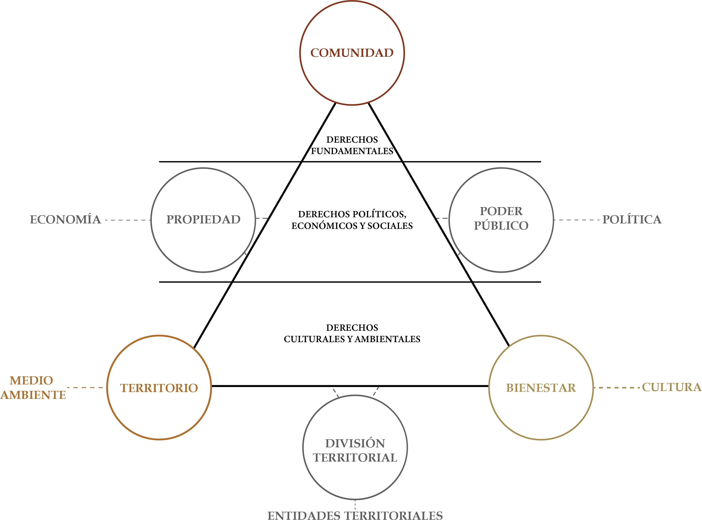
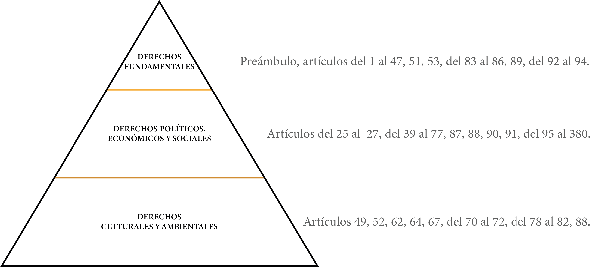

Unidad 1.3 La organización del Estado
La victoria de las fuerzas patriotas en Boyacá, el 7 de agosto, eliminó los últimos reductos de la Corona en la Nueva Granada. Este triunfo despejó algunas de las inquietudes de los constituyentes de Angostura y facilitó la preparación de las elecciones para el Congreso, que Antonio Nariño instaló el 6 de mayo de 1821.
El 6 de octubre de 1821 se sancionó la Constitución de Cúcuta, inspirada en las ideas de la Constitución de Angostura. La nueva Carta estableció: “La nación colombiana es para siempre, irrevocablemente libre e independiente de la monarquía española y de cualquier otra potencia o dominación extranjera; la soberanía reside esencialmente en la nación. Los magistrados y oficiales del Gobierno, investidos de cualquiera especie de autoridad, son sus agentes o comisarios, y responden a ella de su conducta pública”.
La Constitución también dispuso que el gobierno de Colombia sería popular y representativo. El pueblo ejercería la soberanía mediante las elecciones primarias y no concentraría su ejercicio en una sola autoridad y dividió el poder supremo en las ramas Legislativa, Ejecutiva y Judicial. Estas disposiciones establecieron la democracia y el régimen presidencial como sistema de gobierno.
La democracia es un sistema político en el que se protegen los derechos y las libertades, y las decisiones se toman con la participación de la ciudadanía. En el pueblo residen la soberanía y la legitimidad; por ello, se define como el gobierno del pueblo, por el pueblo y para el pueblo.
En su sentido original, la democracia es el sistema de gobierno de una comunidad política en el que los ciudadanos deliberan, participan y delegan el poder político.
Esta Sección comprende los siguientes temas: antecedentes; fundamento de la democracia; la Constitución como norma de normas; la Constitución Política de Colombia de 1991; los principios; el Estado social de derecho; los fines del Estado; los derechos; y las acciones de protección ciudadana.
1.1. Antecedentes
En el año 594 a. C., como ya se mencionó, se pidió al poeta Solón que asumiera el gobierno de Atenas, ciudad que se encontraba al borde de una guerra civil entre ricos y pobres. Solón (638 a. C.–558 a. C.) consideró que concentrar el poder podía conducir al despotismo. Por ello, dio la palabra a ambos grupos y reconoció su igualdad como ciudadanos, lo que permitió su participación en la discusión y gestión de los asuntos públicos. El ágora se convirtió en el principal escenario para el uso de la palabra y la participación. La democracia no solo implicó hablar, sino también escuchar y dialogar con confianza, respeto, solidaridad y honestidad.
En el siglo XVII, el filósofo Baruch Spinoza (1632–1677), precursor de la Ilustración, sostuvo que la democracia era el régimen político más deseable. A su juicio, solo este sistema podía garantizar la seguridad individual y la paz social en un marco de igualdad y libertad. Según Spinoza, en una democracia las personas no transfieren su derecho natural a otro individuo, sino a la sociedad de la que forman parte; por ello, conservan su libertad e igualdad.
A mediados del siglo XVIII, Jean-Jacques Rousseau (1712–1778), en su obra El contrato social, criticó la democracia ateniense ejercida directamente por el pueblo, pues la consideraba incompatible con la separación de los poderes Legislativo, Ejecutivo y Judicial. En cambio, defendió el contrato social, la voluntad popular y la ley como expresión del pueblo. Aunque la democracia es un sistema antiguo, perdió vigencia durante largos periodos. Después de las revoluciones y las guerras de Independencia, volvió a consolidarse como modelo de gobierno.
Estados Unidos es considerada la república democrática más antigua del mundo contemporáneo. En el siglo XIX, el político e historiador francés Alexis de Tocqueville (1805–1859) sostuvo que la ley debía ajustarse a la justicia y responder a la decisión de la mayoría. Su principal preocupación era establecer medios legítimos para elegir a los gobernantes y otorgarles poder. Así formuló la democracia representativa, en la que el pueblo gobierna por medio de representantes elegidos por la mayoría. Este modelo ya estaba consagrado en la Constitución de Estados Unidos de 1787, redactada en la Convención de Filadelfia, y fue adoptado por varios Estados, entre ellos Colombia.
Desde la Constitución de Cúcuta, Colombia ha mantenido, con algunas modificaciones, un régimen marcadamente presidencialista. En este sistema, el jefe del Ejecutivo es elegido por voto popular directo y ejerce, al mismo tiempo, como jefe de Estado y de Gobierno. Aunque se inspira en el modelo estadounidense, con el tiempo ha incorporado algunos elementos de los regímenes parlamentarios.
Con el tiempo, la democracia amplió su concepto, sus prácticas y sus formas. Surgieron distintos tipos, como la democracia participativa, deliberativa y pluralista. Aunque cada una tiene características propias, todas se basan en el Estado de derecho, la soberanía popular, la protección de los derechos y las libertades, y la participación efectiva de la ciudadanía en los asuntos públicos.
Colombia suele considerarse una de las democracias más antiguas de Suramérica organizada como una república. Sin embargo, la consolidación del sistema democrático fue interrumpida en distintos momentos, entre ellos la reconquista española (1816–1819), el golpe de Estado de José María Melo en 1854, el golpe contra Tomás Cipriano de Mosquera (1861–1867), el derrocamiento de Manuel Antonio Sanclemente en 1900 y la dictadura de Gustavo Rojas Pinilla, entre el 13 de junio de 1953 y el 10 de mayo de 1957.
1.2. Fundamento de la democracia
Según el politólogo francés Maurice Duverger, en una democracia, el poder político se fundamenta en la soberanía popular. Los gobernantes son elegidos mediante sufragio universal en elecciones relativamente libres y confiables. El gobierno se organiza sobre el pluralismo político y la separación de poderes. Además, las facultades de los gobernantes están limitadas y la ciudadanía goza de libertades públicas, como las de opinión, prensa, reunión, asociación y culto.
Para el profesor Francisco Gutiérrez Sanín, una democracia requiere, como mínimo, un sistema electoral que garantice votaciones libres y reduzca los extremismos. También necesita división de poderes, contrapesos y controles entre las ramas del Estado. El poder debe distribuirse socialmente para impedir que una persona o un grupo lo concentre de manera permanente. Asimismo, deben existir mecanismos efectivos de participación ciudadana, diálogo y negociación, junto con normas constitucionales que garanticen el libre acceso a la información.
1.3. La Constitución: norma de normas
La Constitución reúne las normas fundamentales que organizan el Estado. Define los principios para ejercer los derechos, las garantías y las libertades de la ciudadanía, y regula el funcionamiento de los órganos del poder público. Por ser la norma de mayor jerarquía, busca garantizar, sin discriminación, la protección efectiva y permanente de los derechos, los principios y las reglas.
La Constitución puede entenderse como resultado del contrato social: el poder político proviene del pueblo y es soberano. Como norma jurídica suprema, es la base del Estado de derecho y establece cómo se organiza, se ejerce y se limita el poder público. También determina la forma de modificar el orden constitucional cuando sea necesario.
La Constitución de Filadelfia, escrita en 1787, suele considerarse la primera Constitución moderna. Su principal objetivo fue proteger la libertad y los derechos de los ciudadanos frente al poder legislativo, así como preservar la autonomía de los Estados miembros. En Francia, la Constitución de 1791 buscó limitar el poder monárquico e incorporar los principios de la Declaración de los Derechos del Hombre y del Ciudadano.
1.4. Las Constituciones en Colombia
Durante el siglo XIX, además de constituciones regionales —como la de Cundinamarca de 1811—, se promulgaron siete constituciones nacionales: la de 1821; la de la Nueva Granada de 1832; la de la República de la Nueva Granada de 1843; la de 1853; la de la Confederación Granadina de 1858; la de los Estados Unidos de Colombia de 1863; y la de la República de Colombia de 1886. Esta última fue reformada en varias ocasiones, entre ellas durante el gobierno de Rafael Reyes, mediante el Acto Legislativo Núm. 3 de 1910, las reformas de 1936 y 1945, el Plebiscito de 1957, la reforma de 1968 y el Acto Legislativo Núm. 1 de 1986.
Durante el gobierno de Virgilio Barco Vargas (1986-1990) se agravaron los problemas de orden público y la violencia armada, que afectaban al país desde años atrás, como lo mostró la toma del Palacio de Justicia durante la administración de Belisario Betancur. A ello se sumó el crecimiento de los carteles del narcotráfico, que sembraron terror mediante atentados, asesinatos y persecución política.
En respuesta, la Corte Suprema de Justicia profirió varios fallos sobre la extradición de colombianos. Esto generó tensiones entre las ramas Ejecutiva y Judicial y reabrió el debate sobre la Reforma de la Constitución de 1886. Barco intentó promover un plebiscito, pero primero debía modificarse el artículo 13 de la Reforma de 1957. En febrero de 1988, el Acuerdo de la Casa de Nariño creó una Comisión de Ajuste Institucional para preparar un proyecto de reforma que sería sometido a votación popular. La iniciativa fracasó porque la constitución reservaba al Congreso la facultad de reformarla. Aunque Barco presentó después el proyecto ante esa corporación, lo retiró durante los debates en medio de la violencia y las amenazas de “Los Extraditables”.
En ese contexto comenzó la campaña presidencial para suceder a Virgilio Barco. Diversos grupos, especialmente estudiantiles, consideraban que una reforma constitucional podía contribuir a la paz y promovieron la “Séptima Papeleta”. El movimiento fue impulsado inicialmente por estudiantes y docentes de la Universidad del Rosario, y luego recibió el apoyo de otras instituciones educativas.
La movilización tomó fuerza durante las elecciones del 11 de marzo, cuando sus promotores propusieron introducir en las urnas una papeleta adicional, denominada “Séptima Papeleta”, con la siguiente pregunta: “Para fortalecer la democracia participativa, vota por la convocatoria de una Asamblea Constitucional con representación de las fuerzas sociales, políticas y regionales de la Nación, integrada democrática y popularmente para reformar la Constitución Política de Colombia. SÍ | NO”.
Aunque la papeleta era informal y no estaba institucionalizada, tuvo un gran impacto. Mediante el Decreto Legislativo Núm. 927 de 1990, el Gobierno acogió la propuesta y autorizó a la Registraduría Nacional para realizar el escrutinio. La iniciativa obtuvo más de un millón y medio de votos.
La campaña electoral fue una de las más tensas del país. Durante este periodo fueron asesinados tres candidatos presidenciales: Luis Carlos Galán Sarmiento; Carlos Pizarro Leongómez, líder del M-19, que acababa de firmar un acuerdo de paz con el Gobierno; y Bernardo Jaramillo Ossa, candidato de la Unión Patriótica. Después de las honras fúnebres de Galán, su hijo Juan Manuel confió a César Gaviria Trujillo la tarea de continuar las banderas del Nuevo Liberalismo. Gaviria fue elegido presidente el 27 de mayo de 1990.
César Gaviria Trujillo se posesionó como presidente de la República el 7 de agosto de 1990, en medio del clamor nacional por la paz y la seguridad. Desde entonces buscó el apoyo de los partidos políticos para convocar una Asamblea Constitucional. El 23 de agosto alcanzó un acuerdo con representantes de distintas colectividades sobre la fecha de la consulta popular y la elección de los constituyentes. Como resultado, y con base en las facultades del artículo 121 de la Constitución, el gobierno expidió el Decreto Legislativo Núm. 1926 del 24 de agosto de 1990. El 9 de octubre de 1990, después de los trámites correspondientes, la Corte Suprema de Justicia declaró constitucional el decreto. Dos meses después se realizaron las elecciones, en las que más de tres millones de ciudadanos apoyaron la convocatoria de la Asamblea Nacional Constituyente.
De los setenta integrantes elegidos, el Partido Liberal obtuvo veinticinco curules; el M-19, diecinueve; el Movimiento de Salvación Nacional, once; el Partido Conservador, nueve; y la Unión Patriótica y la Unión Cristiana, dos cada una. Finalmente, se sumaron dos representantes de los grupos indígenas.
La Asamblea Nacional Constituyente se instaló solemnemente en el Capitolio Nacional el 5 de febrero de 1991. Después de cinco meses de trabajo, sus tres presidentes: Álvaro Gómez Hurtado, Horacio Serpa Uribe y Antonio Navarro Wolff, en representación de las tres corrientes políticas mayoritarias, proclamaron la nueva Constitución Política de Colombia el 4 de julio de 1991, en el Salón Boyacá del Capitolio Nacional.
1.5. Los principios
Según el artículo 4º de la Constitución, en caso de incompatibilidad entre la Constitución y una ley u otra norma jurídica, prevalecen las disposiciones constitucionales. Tanto los nacionales como los extranjeros que se encuentren en Colombia tienen el deber de acatar la Constitución y las leyes, así como de respetar y obedecer a las autoridades.
El Preámbulo señala que el ejercicio del poder soberano debe buscar: “Fortalecer la unidad de la Nación y asegurar a sus integrantes la vida, la convivencia, el trabajo, la justicia, la igualdad, el conocimiento, la libertad y la paz, dentro de un marco jurídico, democrático y participativo que garantice un orden político, económico y social justo y comprometido …”. Los diez artículos que integran el Título I consagran los principios fundamentales, los cuales orientan la actuación de los órganos del poder público.
No puede concebirse una Constitución sin principios, pues toda norma constitucional refleja uno o varios valores morales, éticos y políticos: algunos permanecen estables y otros se transforman con el tiempo. Los principios constituyen, además, los cimientos de la Constitución. Al establecerlos, el constituyente adopta una posición frente a diversos planteamientos éticos, jurídicos, filosóficos, políticos, económicos e incluso religiosos, y privilegia aquellos que guardan mayor relación con el bien común.
La dignidad humana puede considerarse el “principio de principios”, pues constituye la esencia de la condición humana y comprende características que le son propias, como la conciencia, la autonomía, el libre albedrío, las pasiones, los sueños y la sociabilidad. Es, además, la piedra angular del derecho político universal y un principio básico reconocido expresamente en diversas constituciones, entre ellas la Constitución colombiana de 1991. Así lo estableció la Declaración Universal de Derechos Humanos, adoptada y proclamada en diciembre de 1948 por la Asamblea General de las Naciones Unidas mediante la Resolución 217 A (III). Su artículo 1º dispone: “Todos los seres humanos nacen libres e iguales en dignidad y derechos y, dotados como están de razón y conciencia, deben comportarse fraternalmente los unos con los otros”.
En el orden constitucional colombiano, el respeto por la dignidad humana y el reconocimiento del valor intrínseco de cada persona deben orientar todas las actuaciones del Estado y de los ciudadanos, sin discriminación alguna. Las demás normas del ordenamiento jurídico y político deben garantizar el respeto por el ser humano. Por esta razón, el reconocimiento de principios y derechos como la vida, la igualdad, el libre desarrollo de la personalidad, la identidad personal, la salud y el trabajo, así como los límites impuestos a las actuaciones del Estado y de los particulares, tienen como finalidad proteger la dignidad humana.
La Constitución contiene 380 artículos, en los que se consagran, entre otros asuntos, los principios fundamentales; los mecanismos de protección y participación; las garantías; los derechos económicos, sociales, culturales y ambientales; los deberes de los ciudadanos; la estructura y organización del Estado; la división del poder; los fines sociales del Estado; y las disposiciones transitorias. Estos elementos regulan aspectos esenciales del gobierno y del ejercicio de la ciudadanía en el territorio nacional.
1.6. Estado social de derecho
El artículo 1º del Título I, De los principios fundamentales establece: “Colombia es un Estado social de derecho, organizado en forma de República unitaria, descentralizada, con autonomía de sus entidades territoriales, democrática, participativa y pluralista, fundada en el respeto de la dignidad humana, en el trabajo y la solidaridad de las personas que la integran y en la prevalencia del interés general”.
El Estado de derecho se caracteriza por el imperio de la ley, es decir, por la existencia de un sistema de normas jurídicas que regula el ejercicio del poder político, orienta la conducta de los ciudadanos y limita las facultades del Estado. Este sistema debe aplicarse de manera justa e igualitaria para garantizar la libertad y el orden social. El Estado social, por su parte, busca promover el bienestar colectivo dentro de ese marco jurídico.
En un Estado de derecho, el poder se ejerce mediante las leyes y no depende de la voluntad de las personas. Los gobernantes solo pueden actuar dentro del marco jurídico establecido, por lo que el poder está subordinado a la ley. El Estado social de derecho es una construcción jurídica y política orientada a lograr el bienestar efectivo de toda la población. Por ello, las leyes no solo deben ser justas, sino que también deben aplicarse de manera efectiva.
Como afirma el constitucionalista Juan Carlos Esguerra, el Estado social de derecho es, ante todo, un propósito cuya realización exige recorrer un largo camino. Un Estado de derecho —y, con mayor razón, un Estado social de derecho— debe garantizar la efectividad de los derechos de todas las personas por medio de un derecho justo, orientado al bien común, nacido de la voluntad general y confiado a gobernantes que también se encuentran sometidos a la ley.
1.7. Fines del Estado
El artículo 2º de la Constitución de 1991 establece que los fines esenciales del Estado son: “servir a la comunidad, promover la prosperidad general y garantizar la efectividad de los principios, derechos y deberes consagrados en la Constitución; facilitar la participación de todos en las decisiones que los afectan y en la vida económica, política, administrativa y cultural de la Nación; defender la independencia nacional, mantener la integridad territorial y asegurar la convivencia pacífica y la vigencia de un orden justo”.
Asimismo, dispone que “las autoridades de la República están instituidas para proteger a todas las personas residentes en Colombia, en su vida, honra, bienes, creencias y demás derechos y libertades, y para asegurar el cumplimiento de los deberes sociales del Estado y de los particulares”.
1.8. Los derechos
Los derechos humanos consagrados en la Constitución Política pueden clasificarse, según los fines que persiguen y su prevalencia, en derechos fundamentales; derechos políticos, económicos, sociales y culturales (DESC); y derechos colectivos y del ambiente.
Imagen 10. Derechos en Colombia

Fuente: Elaboración Sociedad de Mejoras y Ornato de BogotáLos derechos fundamentales son aquellos relacionados con las libertades esenciales, la protección de la vida y la dignidad humana. En su mayoría se encuentran en el capítulo “De los derechos, las garantías y los deberes” de los principios fundamentales en la Constitución Política. Entre ellos se incluyen: el artículo 7 (protección a la diversidad étnica y cultural); el artículo 11 (derecho a la vida); el artículo 12 (prohibición de la desaparición forzada o la tortura); el artículo 13 (igualdad ante la ley); el artículo 18 (libertad de conciencia); el artículo 29 (debido proceso); el artículo 38 (libertad de asociación); y el artículo 40 (derecho a elegir y ser elegido).
Los derechos políticos, económicos, sociales y culturales son aquellos que permiten las condiciones materiales para la realización de una vida digna. En ellos están incluidos los derechos a la alimentación, la salud, la educación, la vivienda, el trabajo, el agua y el saneamiento, la participación en actividades culturales y la seguridad social. Están ubicados principalmente en el Capítulo 2: “De los derechos sociales, económicos y culturales” de la Constitución. Algunos de ellos se encuentran consagrados directamente en la Constitución y otros fueron adoptados en el ordenamiento jurídico gracias a la ratificación de convenios internacionales.
En la Constitución se dispone el artículo 44 para garantizar los derechos de la niñez; el artículo 45 para la juventud; el 46 para los adultos mayores; y el 64 para la población campesina. En el artículo 48 se establece la seguridad social; en el 67, la educación; en el 25, el trabajo; y en el 51, la vivienda.
Por último, los derechos colectivos y del medio ambiente comprenden el conjunto de derechos relacionados con el espacio público, la autonomía de los pueblos y el medio ambiente sano. Se encuentran, en su mayoría, en el Capítulo 3: “De los derechos colectivos y del ambiente” de la Constitución: el artículo 82 (protección del espacio público); el 49 (salud y saneamiento); el 79 (ambiente sano y su conservación); el 80 (planificación para el manejo y aprovechamiento de recursos), entre otros.
Imagen 11. Derechos Constitucionales en Colombia

Fuente: Elaboración Sociedad de Mejoras y Ornato de Bogotá1.9. Acciones de protección ciudadana
La Constitución establece acciones constitucionales como herramientas de protección de los derechos humanos y mecanismos para escuchar a la ciudadanía. Entre ellas, la acción de tutela, contemplada en el artículo 86, permite presentar un reclamo ante los jueces para exigir la protección de un derecho fundamental vulnerado, restringido o desprotegido. El artículo 87 establece la acción de cumplimiento, que permite a las personas exigir el cumplimiento de una ley o acto administrativo que se considere omitido. La acción popular, contemplada en el artículo 88, está enfocada en proteger los derechos e intereses colectivos.
Sección 1.3.2 La organización del territorio colombiano Sección 1.3.3 El derecho de propiedad Sección 2.1.1 Una nueva ciudadanía Sección 2.1.2 Mecanismos de participación constitucionales y participación ciudadana